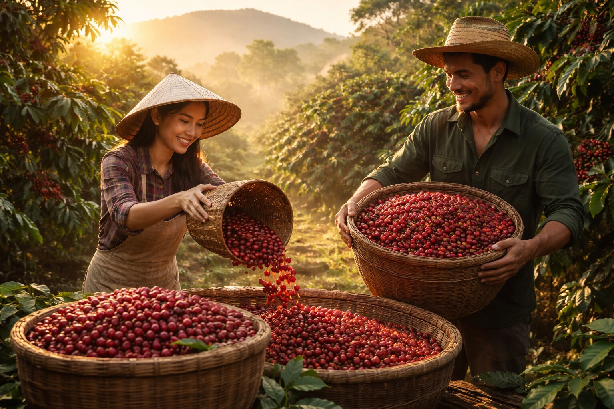

Los mejores cafés del mundo
Principales productores
Brasil
Brasil es el mayor productor de café del mundo, responsable de cerca del 35% de la producción global. Sus principales regiones cafeteras incluyen Minas Gerais y São Paulo, donde se cultivan variedades arábica de alta calidad.
Colombia
Colombia produce uno de los cafés más suaves y aromáticos del mundo. El café colombiano, cultivado en la Cordillera de los Andes, destaca por su equilibrio y notas frutales.
Etiopía
Etiopía es considerada la cuna del café. La leyenda cuenta que un pastor llamado Kaldi descubrió sus propiedades al observar cómo sus cabras se energizaban al comer las bayas. Hoy produce cafés con notas florales y afrutadas únicas.
Vietnam
Vietnam es el segundo mayor productor de café del mundo, especializado en la variedad robusta. Su café se caracteriza por un sabor fuerte e intenso, muy utilizado en mezclas comerciales y café instantáneo.
